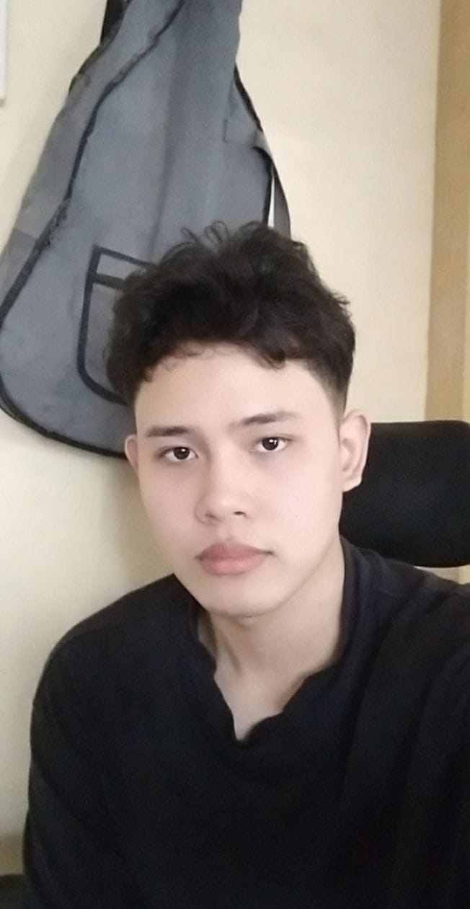

My Autobiography

Madla Biography
My name is Celdrick Nheld Maddla, I was born fifth of september, 2001 in bernardino hospital II. My childhood is not that great but i have some good memories to my family and friends. I have a dog name putot because his tail is short and I dont have too much friend. My dad is OFW worker and my mom was stay at home. My habbies is watching movie, palying games, sleep and listening music.
Growing up with my mom and lola is great they always care of me. My cousins house is near in our house so I always thier and watch movie with my cousins. Every vacation our family is always planning of out town going in any resort or sea side to relaxed but now in this pandemic everthing is ruined, every planning for vacaton has been stopped. So I always in my room watching movie, looking in social media, vibing and mentained physicaly fit and healthy, sometimes babysitting to my little cousin.
Now in this pandemic my life is controlling of circle of life, it felt like a deja vu everytime. Wake up, going bath, ready for class, eat, rest, ready the assigmnet or task, social media, listening music, waiting for midnight and sleep then repeat againt in the next day. In my free day I'll do something fun to do or go outside to lessen my boredness in our house, video call with my friend or co-op gameplay with them. Until now my life is stuck on repeating like the other day, waiting for things to happen in the future.